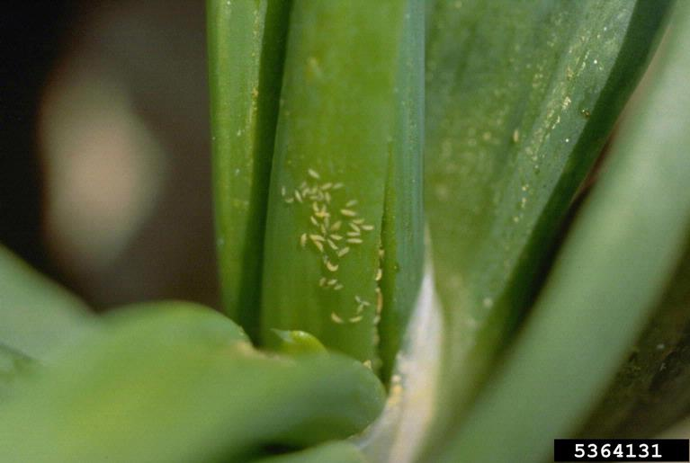

Onion thrips (Thrips tabaci)

What to do
- Thrips infestations are more severe in dry seasons, and entire fields may be destroyed. To prevent infestation, keep plants well irrigated. Dry plants are more susceptible to thrips damage than well watered ones.
- Remove weeds, as the thrips population builds up on them.
- Remove heavily infested plant material.
- For control, neem extracts can be sprayed on attacked plants. However, care should be taken, since some neem preparations, in particular those with high oil content, can be phytotoxic to onions (Schmutterer, 1995).
- Also a garlic bulb extract can be sprayed thoroughly on the whole plant, preferably early in the morning. Spraying should be particularly directed to the neck area of the plant for good penetration into the plant.